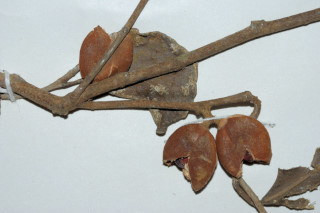
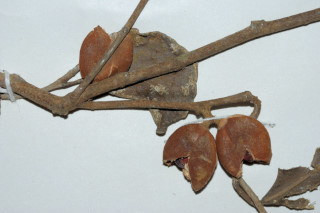

Bark smooth, brown.
ತೊಗಟೆ ಕಂದು ಬಣ್ಣ ಹೊಂದಿದ್ದು ನಯವಾಗಿರುತ್ತದೆ.
തവിട്ടുനിറത്തിലുളള മിനുസമാര്ന്ന പുറംതൊലി.
மரத்தின் பட்டை வழுவழுப்பானது, ப்ரவுன் நிறமானது.
Branchlets terete, glabrous.
ಕಿರುಕೊಂಬೆಗಳು ದುಂಡಾಗಿದ್ದು ರೋಮರಹಿತವಾಗಿರುತ್ತವೆ.
അരോമിലമായ, ഉരുണ്ട ഉപശാഖകള്.
சிறிய நுனிக்கிளைகள் குறுக்குவெட்டுத் தோற்றத்தில் வளையமானது, உரோமங்களற்றது.
Leaves simple, alternate, spiral; stipules caducous; petiole 0.5-1 cm long, canaliculate; lamina 5.5-8 x 3-5.5 cm, obovate or orbicular, apex obtuse or retuse, base cuneate; midrib slightly raised above; secondary_nerves ca. 5 pairs; tertiary_nerves reticulate.
ಎಲೆಗಳು ಸರಳವಾಗಿದ್ದು,ಪರ್ಯಾಯ ಮತ್ತು ಸುತ್ತು ಜೋಡನಾ ಮಾದರಿಯಲ್ಲಿರುತ್ತವೆ. ಕಾವಿನೆಲೆಗಳುಉದುರಿಹೋಗುವ ಮಾದರಿಯವು; ತೊಟ್ಟುಗಳು 0.5-1 ಸೆಂ.ಮೀ. ಉದ್ದವಿದ್ದು ಕಾಲುವೆ ಗೆರೆಗಳನ್ನು ಹೊಂದಿರುತ್ತವೆ; ಪತ್ರಗಳು 5.5 - 8 X 3 – 5.5 ಸೆಂ ಮೀ. ಗಾತ್ರ; ಬುಗುರಿ ಅಥವಾ ದುಂಡಾಕಾರದಲ್ಲಿದ್ದು, ಚೂಪಲ್ಲದ ಅಥವಾ ದುಂಡಾದ ತುದಿಯಲ್ಲಿ ಕಚ್ಚುಳ್ಳ ತುದಿ, ಬೆಣೆಯಾಕಾರದ ಬುಡ, ಮಧ್ಯನಾಳ ಪತ್ರದ ಮೇಲ್ಭಾಗದಲ್ಲಿ ಸ್ವಲ್ಪ ಮಟ್ಟಿಗೆ ಉಬ್ಬಿಕೊಂಡಿರುತ್ತದೆ; ಎರಡನೇ ದರ್ಜೆಯ ನಾಳಗಳು ಅಂದಾಜು 5 ಜೋಡಿಗಳಿರುತ್ತವೆ;ಮೂರನೇ ದರ್ಜೆಯ ನಾಳಗಳು ಜಾಲಬಂಧ ನಾಳ ವಿನ್ಯಾಸದವು.
ലഘുവായ ഇലകള്, ഏകാന്തരക്രമത്തില് സര്പ്പിളമായി അടുക്കിയിരിക്കുന്നു; എളുപ്പം കൊഴിഞ്ഞ് വീഴുന്ന അനുപര്ണ്ണങ്ങള്; ചാലോട്കൂടിയ ഇലഞെട്ടിന് 0.5 സെ.മീ മുതല് 1 സെ.മീ വരെ നീളം; പത്രഫലകത്തിന് 5.5 സെ.മീ മുതല് 8 സെ.മീ വരെ നീളവും 3 സെ.മീ മുതല് 5.5 സെ.മീ വരെ വീതിയും, അപഅണ്ഡാകാരമോ വൃത്താകാരമോ ആണ്, പത്രാഗ്രം ഉപകോണാകാരംതൊട്ട് അറ്റത്തൊരു ചെറുവിടവുള്ള വൃത്താകാരം വരെയാകാം; പത്രാധാരം ആപ്പാകാരത്തിലാണ്; മുഖ്യസിര മുകളില് ഒരല്പ്പം ഉയര്ന്നതാണ്; ഏതാണ്ട് 5 ജോഡി ദ്വിതീയ ഞരമ്പുകള്; ജാലിതമായ ത്രിതീയ ഞരമ്പുകള്.
இலைகள் தனித்தவை, மாற்றுஅடுக்கமானவை, சுழல் போன்று அமைந்தவை; இலையடிச்செதில் எளிதில் உதிரக்கூடியவை; இலைக்காம்பு 0.5-1 செ.மீ. நீளமானது, குறுக்குவெட்டுத் தோற்றத்தில் கேனாலிகுலேட்; இலை அலகு 5.5-8 X 3-5.5 செ.மீ., தலைகீழ் முட்டை வடிவம் அல்லது வட்டவடிவானது (ஆர்பிக்குலார்) அலகின் நுனியில் மழுங்கியது அல்லது சிறு பிளவுடையது (ரெட்யுஸ்). அலகின் தளம் ஆப்பு வடிவானது; மையநரம்பு மேற்புறத்தில் அலகின் மேற்பரப்பைவிட உயர்ந்தது; இரண்டாம் நிலை நரம்புகள் 5 ஜோடிகளுடையது; மூன்றாம் நிலை நரம்புகள் வலைப்பின்னல் போன்றது.
Flowers unisexual, dioecious; male flowers in axillary catkins, 2.5 cm long; female flowers in condensed cymes.
ಹೂಗಳು ಏಕಲಿಂಗಿಗಳಾಗಿದ್ದು ಗಂಡು ಮತ್ತು ಹೆಣ್ಣು ಹೂಗಳು ಪ್ರತ್ಯೇಕ ಸಸ್ಯಗಳಲ್ಲಿರುತ್ತವೆ; ಗಂಡು ಹೂಗಳು ಅಕ್ಷಾಕಂಕುಳಿನಲ್ಲಿರುವ ಪುಷ್ಪದಳರಹಿತ ಏಕಲಿಂಗಿ ಹೂಗಳುಳ್ಳ ಕದಿರುಮಂಜರಿಗಳಲ್ಲಿರುತ್ತವೆ; ಹೆಣ್ಣು ಹೂಗಳು ಸಂಕುಚಿತವಾದ ಮಧ್ಯಾರಂಭಿ ಪುಷ್ಪಮಂಜರಿಯಲ್ಲಿರುತ್ತವೆ.
പൂക്കള് ഏകലിംഗികളാണ്, ഡയീഷ്യസും; ആണ്പൂക്കള് 25 സെ.മീ നീളമുളള, കക്ഷീയ കാറ്റ്കിന് ആണ്; പെണ്പൂക്കള് കുറിയ സൈമുകളിലുണ്ടാകുന്നു.
மலர்கள் ஓர்பாலானவை, ஈரகம் கொண்டவை; ஆண்மலர்கள் தண்டின் இலைக்கோணங்களில் காணப்படும் கேட்கின்ஸ், 2.5 செ.மீ. நீளமானது; பெண்மலர்கள் குட்டையான சைம்.
Capsule fusiform, glabrous, beaked, 2 cm long, 2-4 seeded.
ಸಂಪುಟ ಫಲಗಳು 2 ಸೆಂ.ಮೀ. ಉದ್ದವಿದ್ದು, ಕದಿರಣಿಗೆ ರೂಪದಲ್ಲಿದ್ದು ಅಗ್ರದಲ್ಲಿ ಕೊಕ್ಕನ್ನು ಹೊಂದಿರುತ್ತವೆ; ಬೀಜಗಳು 2 ರಿಂದ 4.
2 മുതല് 4 വരെ വിത്തുകളുളള കായ, 2 സെ.മീ നീളമുളള, കൊക്കുളള, അരോമിലമായ നടുവില് വീര്ത്തും അറ്റങ്ങള് കൂര്ത്തുമിരിക്കുന്ന കാപ്സ്യൂള് ആണ്.
வெடிகனி (கேப்சூல்), படகு போன்றது(பியஸிபார்ம்), உரோமங்களற்றது, அலகுடையது, 2 செ.மீ. நீளமானது, 2-4 விதைகளையுடையது.
 
